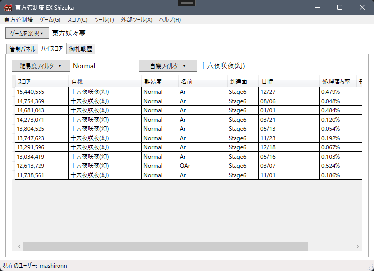

これは何?
東方管制塔 EX は、上海アリス幻樂団による「東方Project」作品群に特化したゲームランチャー/スコアビューアです。
主な機能は以下の通りです。
ゲームランチャー・管制パネル
東方の実行ファイル(th**.exe)を起動します。VsyncPatch(vpatch.exe)やthpracを適用して起動したり、custom.exe(環境設定)を起動することも可能です。
また、ゲームの実行時間を計測して記録したり、ゲームの音量を調整したりできます。
スコアビューア、御札戦歴ビューア

ハイスコアや御札戦歴といったスコアデータの中身を東方管制塔 EX から参照できます。
スコアビューアフィルタリング機能
スコアビューアにおいてハイスコアデータを難易度、自機でフィルタリングして表示したり、御札戦歴データをスペルカード術者(敵機)でフィルタリングして表示したりできます。
ユーザー機能
東方管制塔 EX では、各種設定を「ユーザー」ごとに管理し、設定はユーザーごとに完全に隔離されます。
フレーム型ウィンドウリサイザ
初期の頃の作品など、サイズが固定のウィンドウをリサイズすることができます。
プラグイン
プラグインを導入することで、機能を拡張することができます。
プラグインは開発部から提供されるほか、ユーザーが自作したり自作プラグインを配布したりもできます。
これらの画面は開発中のものであり、今後変更が加わる可能性が大いにあります。
対応している作品
現在、以下の作品の製品版に対応しています。(ゲームのバージョンが古いとご利用になれない可能性があります。)
また、東方花映塚については、ハイスコアビューアおよび御札戦歴ビューアがご利用になれません。
東方紅魔郷 ～ the Embodiment of Scarlet Devil.
東方妖々夢 ～ Perfect Cherry Blossom.
東方永夜抄 ～ Imperishable Night.
東方花映塚 ～ Phantasmagoria of Flower View.
東方風神録 ～ Mountain of Faith.
東方地霊殿 ～ Subterranean Animism.
東方星蓮船 ～ Undefined Fantastic Object.
東方神霊廟 ～ Ten Desires.
東方輝針城 ～ Double Dealing Character.
東方紺珠伝 ～ Legacy of Lunatic Kingdom.
東方天空璋 ～ Hidden Star in Four Seasons.
東方鬼形獣 ～ Wily Beast and Weakest Creature.
東方虹龍洞 ～ Unconnected Marketeers.
コードネーム
東方管制塔 EX では、メジャーバージョン毎に固有のコードネームを割り当てています。
ver0.x.xのコードネームは"Shizuka"であり、これは月面の「静かの海」に由来します。
推奨動作環境
Microsoft Windows 10/11
東方管制塔 EX の動作には、Microsoft の .NET Desktop Runtime 8.0 のインストールが必要です。
以下のリンクよりインストーラーをダウンロードしてインストールをお願いします。
.NET 8.0 のダウンロード
諸注意(必読)
本ツールは開発中のアルファ版です。
機能が不十分であったり、利便性が芳しくない可能性があります。
東方管制塔 EX では「ユーザー」単位で設定を管理しています。
初回起動時に「ユーザーの追加」ダイアログが表示されるので、任意のユーザー名を入力して[追加(A)]ボタンをクリックしてください。
ユーザーを追加しないと、東方管制塔 EX をご利用になれません。
ver0.1.0-alpha現在、ユーザー名は一度決定すると変更ができません。
追加したユーザーを削除することも今のところできません。
ですのでユーザー名はなるべく後悔しないよう考えてください。
UserIndex.xml、UserSelectionConfig.xmlというファイルと、Usersフォルダというフォルダを削除することで設定をリセットできます。
万が一の際は設定をリセットして初回セットアップからやり直してみてください。
ダウンロード
ダウンロードされるバージョン: ver0.2.0-alpha
東方管制塔 EX のダウンロード (7zファイル)
東方管制塔 EX のダウンロード (zipファイル)
リリースノート
7z ファイルでダウンロードするか、zip ファイルでダウンロードするか選択できます。
どちらを選んでも中身は変わりませんが、7z ファイルの方がダウンロードサイズが小さくなります。
Windows 11 ではエクスプローラーの標準機能で 7z ファイルを解凍できます。
プラグインについて
東方管制塔 EX では、プラグインを導入することによって機能を拡張することができます。
プラグインの一覧
プラグインの導入方法
プラグインのつくりかた
プラグインの導入によって生じた損害については開発部は責任を負えません。
アイコンについて
アイコンに使われている博麗霊夢のイラストはつくだに
(
@tukudani_2005)
さんが作成したものです。
お問い合わせ・フィードバック
東方管制塔 EX の不具合に関する報告や、新機能の提案は以下のフィードバックフォームにお願いします。
東方管制塔 EX フィードバックフォーム
ツールに関する質問などお問い合わせは、開発者 X(旧Twitter) アカウントまでお願いします。
開発者 X(旧Twitter) アカウント
ソースコード
東方管制塔 EX は GitHub で2条項BSDライセンス下でソースコードが公開されています。
東方管制塔 EX のリポジトリ(GitHub)
開発協力者
稲凪咲(お餅のCreeper)(@Riku_2004)
千葉(@oe725877)